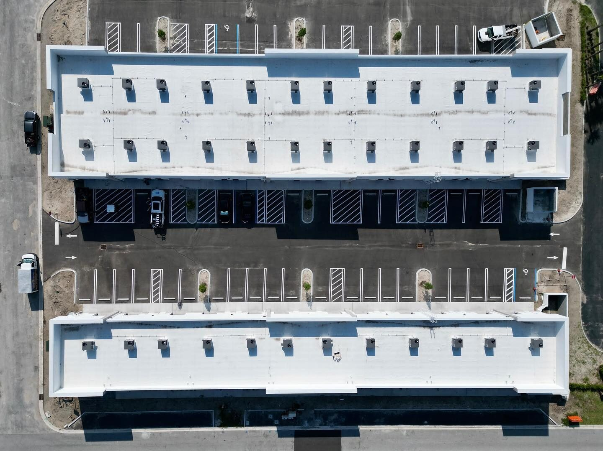

Reliability is the single most important quality a GC or owner is buying when they hire a commercial glazing subcontractor — and the hardest to evaluate before the contract is signed. License verification and insurance certificates are table stakes. They tell you the sub is legally qualified to do the work, but they do not tell you whether the sub will hit the schedule, deliver first-pass-approval submittals, or close the punch list without chasing. This article walks through the seven reliability indicators that actually predict project outcomes in Florida commercial glazing, and how to surface them during vetting.

Why License Alone Does Not Equal Reliability
Florida requires a Certified General Contractor (CGC) or Certified Glass and Glazing Contractor (CGG) license for commercial glazing work, which is a necessary baseline. But a license tells you the contractor has passed a trade exam and carries the minimum insurance coverage. It does not tell you whether they will hit the schedule, produce a first-pass-approval submittal, or close the punch list before the CO inspection. Those outcomes depend on systems and capacity that are not licensed or regulated — which is why two licensed glaziers with identical qualifications on paper can deliver dramatically different project outcomes.
Below are the seven indicators that actually predict reliability on a commercial glazing scope. GCs, developers, and owner PMs who evaluate subs against these indicators consistently get better outcomes than those who default to low price.
1. Schedule Performance Track Record
Schedule compliance is the single best proxy for operational maturity in a glazing subcontractor. A sub that hits dates on 85%+ of projects has a project management system, a fabrication relationship, and a field crew capacity that work together. A sub that misses dates routinely does not have those three in alignment, and the pattern will repeat on your project.
Ask directly: "What percentage of your projects in the last two years hit their glazing milestones on the original contract schedule?" A credible sub will have a number and be able to back it up with specific examples. A less credible sub will hedge, blame other trades, or offer generalities.
Also ask for references on recent projects — not the glamor ones, but the ones that were similar in size and complexity to yours. Call those references and ask about schedule specifically.
2. Submittal Quality and Turnaround
The submittal package a glazing subcontractor delivers within two weeks of contract award tells you nearly everything about their operational reliability. Good subs deliver:
- First-pass-approval submittals (shop drawings, product data, NOA references, finish samples) that architects approve without substantive revision
- Complete submittal packages — not piecemeal deliveries
- Drawings that reflect the actual project conditions, not generic boilerplate
- Engineering calculations signed and sealed where required
- Clear alternates identified where better or faster options exist
Poor submittal quality shows up as multiple revision cycles, missing documentation, drawings that don't match the architectural set, and unsigned engineering. Every week of submittal back-and-forth pushes fabrication and installation. See our dedicated submittal process guide for the full process and checklist.
3. Punch-List Closure Speed
How fast a subcontractor closes punch-list items at the end of a project is a direct read on their commitment to the relationship. Reliable subs have crews that can return within days of punch-list issuance, not weeks. They treat close-out as a core part of the job, not a nuisance to be minimized.
Indicators of good punch-list performance:
- Formal punch walk scheduled and conducted by a company PM, not just a field super
- Written close-out confirmation for each item
- Retainage released within 30 days of final completion, not dragging into 60 or 90 days
- Warranty documentation delivered before final payment rather than chased after
4. Manufacturer Authorization Depth
There is a difference between a glazing contractor who buys from ESWindows occasionally and one who is a factory-authorized certified installer. Factory authorization means:
- Direct training on installation procedures from the manufacturer
- Priority on fabrication slots (meaningful in tight schedule environments)
- Access to factory engineering support for unusual details
- Warranty pass-through coordinated with manufacturer warranties
- Pre-release access to new products and approved configurations
ACG is an authorized installer for ESWindows, Euro-Wall, YKK AP, and Kawneer — which means we have the training, priority, and engineering relationship depth that non-authorized contractors do not. See our manufacturer partners page for the full list.
5. Bondability
Whether a glazing subcontractor can obtain payment and performance bonds is a good read on their financial stability. Surety companies underwrite based on working capital, accounts receivable aging, project history, and management depth. A sub who is routinely bondable at $1M+ has passed underwriting on all of those. A sub who cannot obtain bonds is either too new to have the track record, too small to pass working capital tests, or has financial issues.
For public projects and many private commercial contracts, bondability is a contractual requirement. For projects that do not formally require bonds, asking whether the sub is bondable is still a useful reliability check. ACG is bondable for the scopes we take on.
6. GC Partner Diversity
A glazing subcontractor whose entire book is one or two GCs is a risk. If those GC relationships cool, the sub's capacity collapses overnight. A sub with 15–30 active GC relationships across different market segments has both financial resilience and operational breadth.
Ask: "Who were your five largest GC clients last year, and what percentage of revenue did each represent?" A healthy commercial sub will have no single GC over 25–30% of revenue. Above that threshold, the sub is effectively captive to one relationship.
ACG's book includes dozens of GC partners across the state, with no single client representing more than 15% of revenue in any given year. That diversity shows up as schedule flexibility and commercial independence.
7. Project Location Breadth
Commercial glazing subs who operate only in a single metro area have capacity limits during regional construction booms and cannot follow GC relationships into adjacent markets. Subs with statewide capacity — offices or crews in multiple markets — can service projects wherever they land.
ACG operates three offices across Florida: West Palm Beach (HQ), Naples, and Tampa. That footprint covers the I-95 corridor, the Gulf coast, and most of central and south Florida within reasonable field-crew distance. For a GC building in multiple Florida markets, a statewide glazing sub simplifies the supply chain. See our location pages for Palm Beach, Tampa, and Naples.
The Residential-to-Commercial Problem
A pattern worth calling out: residential glaziers expanding into commercial work are often unreliable on commercial scopes, not because they are dishonest, but because commercial work requires operational systems they do not have. Schedule discipline, submittal workflow, NOA documentation, shop drawing coordination, commercial bondability, and multi-GC relationships all have to be built up over years. A residential shop that landed a commercial project will typically miss schedule, deliver poor submittals, and struggle through punch list — not because they do not want to perform, but because they do not have the infrastructure.
For the full comparison, see our commercial vs residential glazing article. The reliability difference is substantial and structural.
Reliability Indicators: A Quick Checklist
When vetting a commercial glazing subcontractor in Florida, these questions surface the real reliability profile:
- What percentage of your projects in the last two years hit original schedule?
- Can you provide three references on recent projects similar to ours?
- How long does your typical submittal package take to complete and what is your first-pass approval rate?
- Are you factory-authorized for the specified products? Which ones?
- What is your bonding capacity and current utilization?
- What was your top client as a percentage of revenue last year?
- Where are your offices and how do you cover multi-location projects?
- What is your active project count right now across all GCs?
A reliable commercial glazing sub will answer all eight directly, with numbers. A less reliable sub will hedge. The answers are the reliability indicator.
ACG's Reliability Profile
Five years active, 350+ completed commercial projects, over one million installed square feet. Three Florida offices, dozens of active GC relationships, factory authorization with ESWindows, Euro-Wall, YKK, and Kawneer. CGC1531993 licensed and bondable. Projects like the Wave Food Hall, Lake Park Innovation Center, Dale Mabry Retail, KLUS Lighting, and Harbour Cay II are representative — not exceptional — of how we deliver.
See our questions to ask before hiring article for an expanded vetting framework, and our how to choose a commercial glass contractor for a broader decision guide.
Ready to get started?
ACG is a CGC-licensed Florida commercial glazing subcontractor (CGC1531993) with offices in West Palm Beach, Naples, and Tampa. Five years active, 350+ completed commercial projects, over one million installed square feet. Send plans and we return a detailed scope with system recommendations and 2026 pricing inside 48 hours.